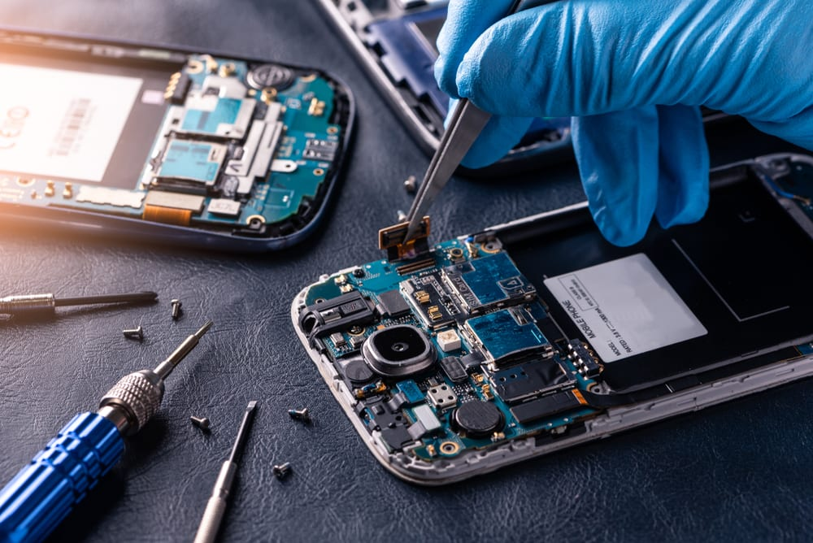

"Un producto que no se desgasta es una tragedia para los negocios."
1. ¿Qué es exactamente?
Es el diseño de un producto con una vida útil limitada artificialmente. Los fabricantes calculan el momento exacto en el que el dispositivo debe fallar o volverse incompatible para forzar al consumidor a comprar la siguiente versión. No es un error de ingeniería, es una decisión de negocio.
2. Un poco de historia: El Cartel Phoebus
En 1924, los principales fabricantes de bombillas del mundo formaron el Cartel Phoebus. Su objetivo: reducir la duración de las bombillas de 2.500 horas a solo 1.000. Este fue el nacimiento oficial de la obsolescencia programada para asegurar ventas recurrentes.

Cartel Phoebus.
3. Tipos y Funcionamiento
Actualizaciones que vuelven lentos los dispositivos o apps que dejan de ser compatibles con hardware que aún funciona perfectamente.
Uso de materiales frágiles o componentes diseñados para fallar tras un número determinado de ciclos de uso.
Piezas pegadas y falta de repuestos. El objetivo es que reparar sea más caro que comprar un producto nuevo.

Consumo más barato que arreglar.
4. El Impacto en nuestro Planeta

Consecuencias: producción, consumo, gastos y residuos.
| Recurso | Impacto de la Renovación |
|---|---|
| Minerales Raros | Extracción intensiva de litio, coltán y tierras raras en zonas críticas. |
| Energía | Fabricar un móvil consume el 80% de toda la energía que usará en su vida. |
| Residuos | Millones de toneladas de metales pesados contaminan suelos y aguas anualmente. |
5. ¿Hay soluciones?
Existen movimientos como el "Right to Repair" (Derecho a Reparar) y empresas que diseñan hardware modular para combatir esta tendencia.

Derecho a reparar.